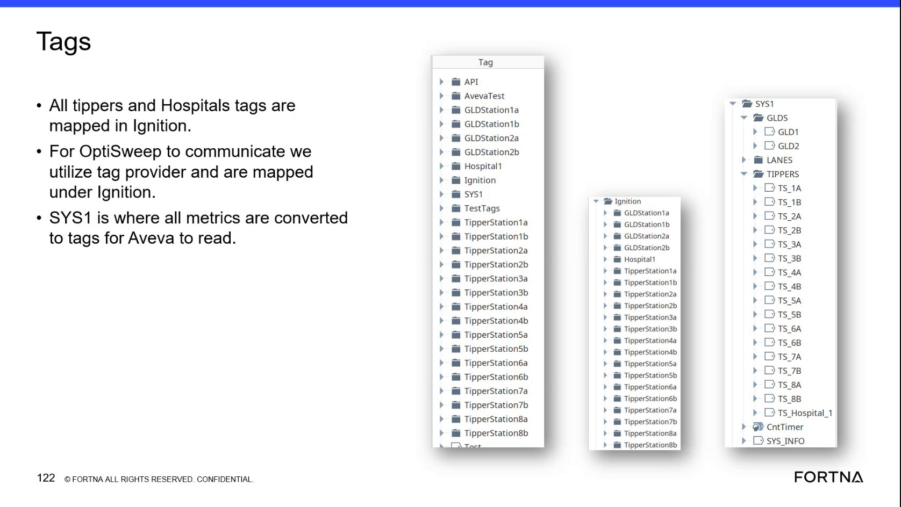
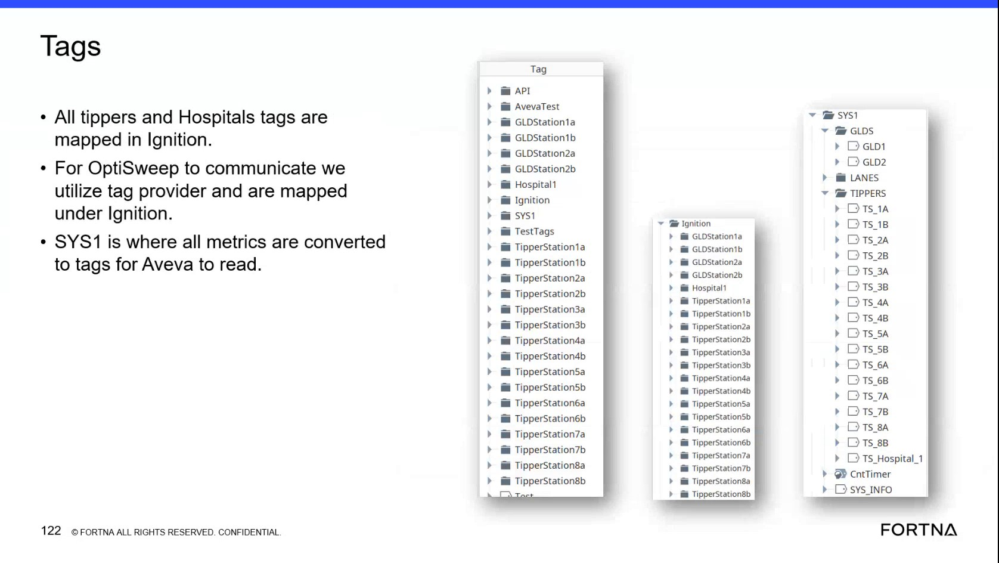

| Procedure ID | proc_verify_ignition_tag_provider_mapping_for_optisweep_station_and_hospital_tags_v1 |
|---|---|
| Title | Verify Ignition Tag Provider Mapping For OptiSweep Station And Hospital Tags |
| Procedure Type | diagnostic |
| Primary Role | L1_support |
| Support Safe | Yes |
| Capability Tags | opc_connection_or_tipper_heartbeat |
| Access Surface | ignition_gateway |
| Audience Roles | L1_support, L2_support, L3_support |
| Failure Pattern Tags | opc_connection_faulted |
| Validation Status | needs_sme_review |
| Merge Status | source_finalized |
Use the Ignition tag browser, tag app, web view, or Designer view to verify that the OptiSweep tag provider mapping is present and that the mapped namespace includes the expected station, hospital, and tipper tag entries shown by the source, including GLDStation, Hospital, and TipperStation names.
Use when OptiSweep communication to station, hospital, or tipper-related tags needs to be verified in Ignition, or when support needs to confirm that the expected mapped tag namespaces exist under the Ignition tag provider.
Responsible role: L1_support
Instruction:
Open the Ignition tag browser or tag app used for OptiSweep tag inspection. If support is not using Designer, use the web view because the source states the tags can be read from the web view. Navigate to the tag tree area that shows the Ignition provider and mapped tags.
Expected result:
A live Ignition tag tree is visible and can be browsed to inspect mapped tags.
Screens / Images:

Stop or Escalate If:
Responsible role: L1_support
Instruction:
In the Ignition tag tree, browse to the mapped area under Ignition where the source states that all tippers and Hospitals tags are mapped. Verify that the visible namespace corresponds to the OptiSweep communication mapping under the tag provider.
Expected result:
The live tag tree shows the mapped area under Ignition that contains station, hospital, and tipper-related tags.
Screens / Images:


Stop or Escalate If:
Responsible role: L1_support
Instruction:
Inspect the visible Ignition tag tree and verify whether it includes source-named entries such as GLDStation1a, GLDStation1b, GLDStation2a, GLDStation2b, Hospital1, and TipperStation entries. Use the source screenshots as the naming reference while checking the live tree.
Expected result:
The live Ignition tree contains the expected GLDStation, Hospital, and TipperStation entries or clearly shows which expected entries are missing.
Screens / Images:
Stop or Escalate If:
Responsible role: L1_support
Instruction:
Compare the live tag names against the source naming pattern that uses numbered stations with paired suffixes such as a and b. Check whether GLDStation and TipperStation entries follow repeated numbered pairs like 1a/1b, 2a/2b, and similar sequences visible in the live tree.
Expected result:
The live tag tree either matches the repeated numbered a/b naming pattern or clearly shows where the pattern breaks.
Screens / Images:
Stop or Escalate If:
Responsible role: L1_support
Instruction:
Record whether the expected mapped tags are present in the live Ignition tree. If the expected station, hospital, or tipper entries are missing, or if the tree does not match the source-described mapping structure, document which namespaces are absent and escalate because the source does not provide corrective configuration steps.
Expected result:
A clear verification result is captured: either the expected Ignition mapping is present, or the missing/inconsistent namespaces are identified for escalation.
Screens / Images:
Stop or Escalate If: